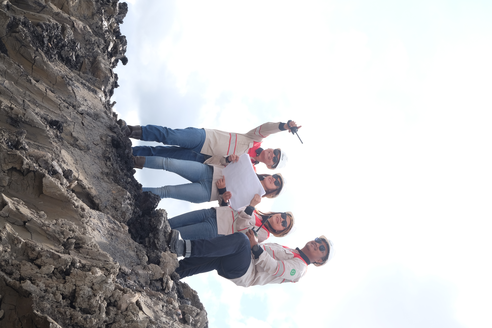
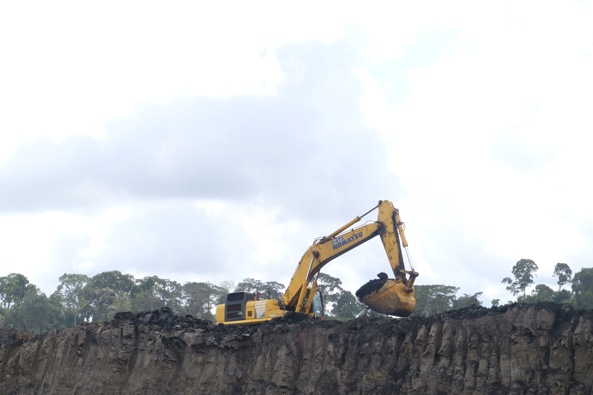
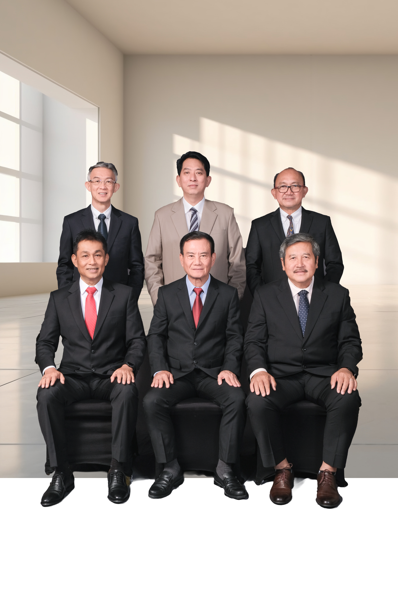
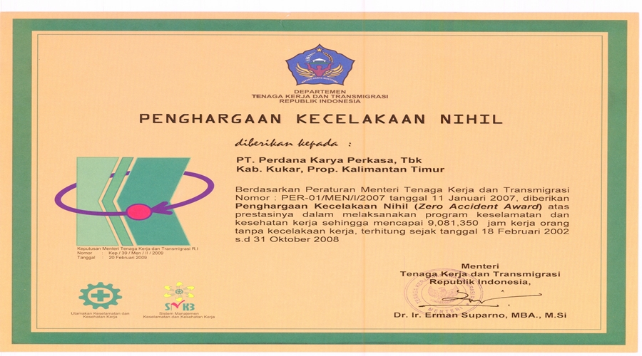

Tentang Paragon Karya PerkasaAbout Paragon Karya Perkasa
Perusahaan yang dibentuk oleh kerja lapangan.A company shaped by field operations.
Berdiri pada 1983, perusahaan berkembang dari jasa penunjang migas ke pertambangan batubara, konstruksi, jasa perkebunan, dan sewa alat berat.Established in 1983, the company developed from oil and gas support work into coal mining, construction, plantation services, and heavy equipment rental.
Halaman ini merangkum profil, arah perusahaan, perjalanan, manajemen, penghargaan, dan tata kelola.This page brings the company profile, purpose, milestones, management, recognition, and governance into one place.

01 / Profil perusahaanCompany profile
Beroperasi dari Kalimantan Timur sejak 1983.Operating from East Kalimantan since 1983.
PT Paragon Karya Perkasa Tbk berawal sebagai PT Perdana Karya Kaltim, penunjang kegiatan migas di Kalimantan Timur.PT Paragon Karya Perkasa Tbk began as PT Perdana Karya Kaltim, supporting oil and gas operations in East Kalimantan.
Perusahaan mendukung operasi PT Vico Indonesia dan Total E&P Indonesie, dengan Salamander Energy Ltd bergabung sebagai pelanggan pada 2011. Perusahaan juga beroperasi di Blok Kangean dan Pagerungan untuk PT EMP Kangean, serta di Sampang, Madura, untuk Santos Energy Ltd.The company supported operations for PT Vico Indonesia and Total E&P Indonesie, with Salamander Energy Ltd joining its customer base in 2011. It also operated in the Kangean and Pagerungan blocks for PT EMP Kangean and in Sampang, Madura, for Santos Energy Ltd.
Usahanya meluas ke pengangkutan batubara pada akhir 1990-an, lalu ke pertambangan batubara dan jasa perkebunan pada 2005. Perusahaan menawarkan 20,83 persen sahamnya kepada publik dan mencatatkannya di Bursa Efek Indonesia pada Juli 2007.Its business expanded into coal transportation in the late 1990s, then coal mining and plantation support in 2005. The company offered 20.83 percent of its shares to the public and listed them on the Indonesia Stock Exchange in July 2007.
PT Deli Putra Bangsa mengambil alih 900.000.000 saham, atau 75 persen dari saham ditempatkan dan disetor penuh, pada 2021. Pada 2026, Resources Global Development Limited mengambil alih 612.000.000 saham (51 persen) dan PT Deli Pratama Nusantara 288.000.000 saham (24 persen).PT Deli Putra Bangsa acquired 900,000,000 shares, equal to 75 percent of issued and fully paid shares, in 2021. In 2026, Resources Global Development Limited acquired 612,000,000 shares (51 percent) and PT Deli Pratama Nusantara 288,000,000 shares (24 percent).
02 / Arah perusahaanDirection
Visi, misi, dan prinsip.Vision, mission, and principles.
Pernyataan berikut diambil dari halaman resmi perusahaan.The statements below are translated from the official company page.
Memberi kepuasan kepada mitra usaha.To provide satisfaction to business partners.
Mitra yang setia dan terpercaya.A loyal and trusted partner.
Filosofi kerjaWorking philosophy
- Berusaha mencapai yang terbaik.Strive to achieve the best.
- Membangun kerja sama yang kuat antarkaryawan.Build strong cooperation among employees.
- Menjunjung komitmen kepada pelanggan dan mitra usaha.Uphold commitments to customers and business partners.
03 / Perjalanan perusahaanCompany journey
Tonggak yang mengubah perusahaan.Milestones that changed the company.
Sebelas tonggak bertanggal dari halaman perjalanan perusahaan resmi.Eleven dated milestones from the official company journey page.

Perusahaan berdiriCompany established
Didirikan sebagai PT Perdana Karya Kaltim.Established as PT Perdana Karya Kaltim.
Nama baruNew company name
Nama berubah menjadi PT Perdana Karya Perkasa.The name changed to PT Perdana Karya Perkasa.
Pencatatan sahamStock exchange listing
Saham tercatat di Bursa Efek Indonesia pada sektor pertambangan batubara.Shares were listed on the Indonesia Stock Exchange in the coal mining sector.
Klasifikasi industriIndustry classification
Klasifikasi industri berubah menjadi pertambangan minyak dan gas.The industry classification changed to oil and gas mining.
Pergantian pemegang saham pengendaliControlling shareholder changed
PT Deli Pratama Batubara mengambil alih mayoritas saham.PT Deli Pratama Batubara acquired a majority shareholding.
Kantor terdaftar pindahRegistered office moved
Kantor terdaftar pindah ke Jakarta Selatan.The company moved its registered office to South Jakarta.
Perubahan maksud dan tujuanCorporate purpose amended
Maksud dan tujuan perusahaan diubah.The company's stated purposes and objectives were amended.
PMHMETD
Penambahan modal dengan hak memesan efek terlebih dahulu.The company completed a capital increase with pre-emptive rights.
Nama pengendali berubahController renamed
PT Deli Pratama Batubara berganti nama menjadi PT Deli Putra Bangsa.PT Deli Pratama Batubara changed its name to PT Deli Putra Bangsa.
Nama perusahaan berubahCompany renamed
Perusahaan berganti nama menjadi PT Paragon Karya Perkasa Tbk.The company changed its name to PT Paragon Karya Perkasa Tbk.
Pergantian pemegang saham pengendaliControlling shareholders changed
Pengendalian beralih dari PT Deli Putra Bangsa kepada Resources Global Development Limited dan PT Deli Pratama Nusantara.Control changed from PT Deli Putra Bangsa to Resources Global Development Limited and PT Deli Pratama Nusantara.
04 / ManajemenManagement
Kepemimpinan dan pengawasan.Company leadership and oversight.
Susunan sesuai halaman manajemen dan tata kelola resmi.Composition shown on the official management and governance pages.

Dewan KomisarisBoard of Commissioners
DireksiBoard of Directors
Fungsi korporatCorporate functions

05 / PenghargaanRecognition
Penghargaan dan sertifikasi.Awards and certification.
Halaman penghargaan resmi saat ini menampilkan sertifikat ini. Detail publikasi mengacu pada halaman aslinya.The official awards page currently presents this certificate. The original page remains the reference for publication details.
06 / Tata kelola perusahaanCorporate governance
Kerangka untuk operasi yang akuntabel.A framework for accountable operations.
Praktik tata kelola Perseroan berpedoman pada peraturan perundang-undangan dan rekomendasi Good Corporate Governance.The company's governance practices follow applicable laws, regulations, and Good Corporate Governance recommendations.

TransparansiTransparency
Keterbukaan dalam pengambilan keputusan dan pengungkapan informasi material yang relevan.Open decision-making and disclosure of material, relevant company information.
AkuntabilitasAccountability
Kejelasan fungsi, pelaksanaan, dan pertanggungjawaban organ perusahaan.Clear organisational functions, implementation, and responsibility.
PertanggungjawabanResponsibility
Pengelolaan perusahaan sesuai peraturan dan prinsip korporasi yang sehat.Company management aligned with laws and sound corporate principles.
KemandirianIndependence
Pengelolaan profesional tanpa benturan kepentingan atau tekanan pihak luar.Professional management without conflicts of interest or external pressure.
KewajaranFairness
Perlakuan setara atas hak pemangku kepentingan berdasarkan perjanjian dan peraturan.Equal treatment of stakeholder rights arising from agreements and laws.
Komite Nominasi dan RemunerasiNomination and Remuneration Committee
Memberi rekomendasi kepada Dewan Komisaris tentang komposisi, nominasi, evaluasi kinerja, pengembangan, dan remunerasi.Provides recommendations to the Board of Commissioners on board composition, nomination, performance evaluation, development, and remuneration.
Unit Audit InternalInternal Audit Unit
Melaporkan pelaksanaan keputusan manajemen dan berkoordinasi dengan Komite Audit sesuai Piagam Audit Internal.Reports on the implementation of management decisions and coordinates with the Audit Committee under the Internal Audit Charter.
Sistem Pengendalian InternalInternal Control System
Mencakup pengendalian keuangan, operasional, dan kepatuhan yang melibatkan Dewan Komisaris, Direksi, Unit Audit Internal, dan Komite Audit.Covers financial, operational, and compliance controls involving the Board of Commissioners, Directors, Internal Audit Unit, and Audit Committee.
Manajemen RisikoRisk Management
Mengidentifikasi, menilai, memantau, dan memitigasi risiko yang dapat mengganggu kegiatan usaha.Identifies, assesses, monitors, and mitigates risks that could disrupt the company's business.
Kode EtikCode of Conduct
Kode Etik yang disahkan pada 2015 berlaku bagi Dewan Komisaris, Direksi, manajemen, dan karyawan.The Code of Conduct, approved in 2015, applies to the Board of Commissioners, Directors, management, and employees.
Whistleblowing
Mekanisme pelaporan untuk investigasi, penegakan, dan pencegahan saat terjadi dugaan pelanggaran.A reporting mechanism supports investigation, enforcement, and prevention when potential violations arise.
Akses InformasiAccess to Information
Informasi disampaikan melalui RUPS, laporan, public expose, siaran pers, pelaporan ke bursa, dan situs web perusahaan.Company information is distributed through shareholder meetings, reports, public exposes, press releases, exchange reporting, and the corporate website.